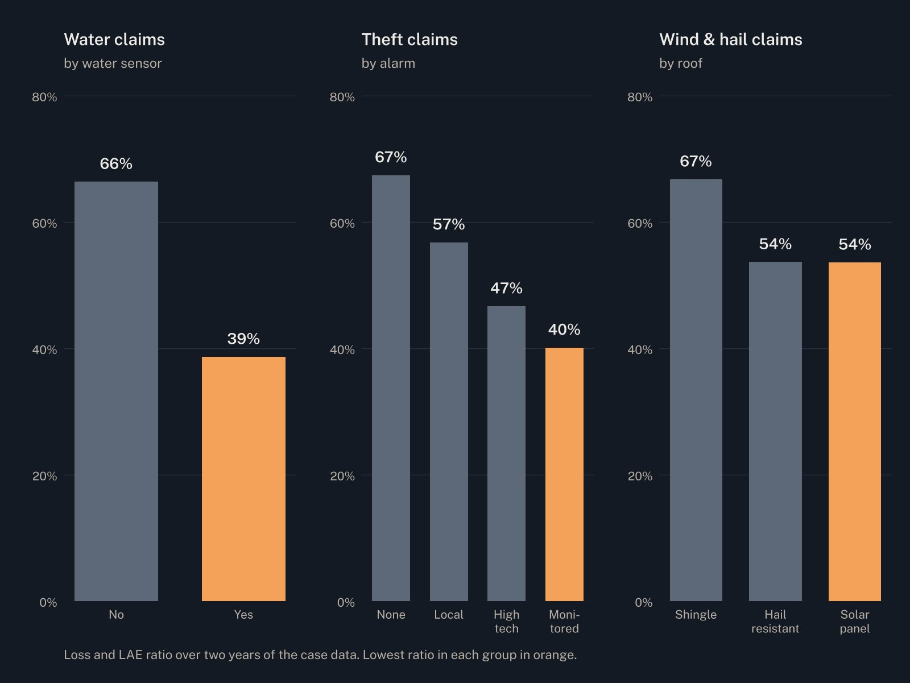

Projects
Insurance pricing, detector calibration and lab physics. Pick a project to see the work behind it.

~200,000policies in the homeowners book, rated by peril
The brief: build rating factors for wind and hail, water, fire, theft, other damage and liability, and propose a new discount structure for water sensors, alarms and roofing, then present it to a panel of executives.

41.6 keV/mVcalibration factor, found from a known 10 keV source
Built estimators for pulse amplitude from detector traces, calibrated them on a particle of known energy, then used the calibration to measure the energy spectrum of an unknown particle.

1.89reduced χ² of the fit of period against string length
Built a physical pendulum and tested damped harmonic motion. The period followed the predicted dependence on length; the decay constant’s dependence on mass fit a logarithm better than the predicted line.

1.87 ± 0.05 eVhydrogen’s Balmer line as measured; theory says 1.89 eV
Calibrated a spectrometer with mercury, matched hydrogen’s Balmer lines and helium’s spectrum within uncertainty, and identified an unknown gas as krypton from its three peaks.

K₀(A)the group the talk builds, via the Grothendieck construction
An oral and a written report introducing the K₀ group of a unital C*-algebra, for a research reading course in operator algebras.

HTML · CSS · JSno framework, hosted on GitHub Pages
Designed and built from scratch, with one shared stylesheet, self-hosted fonts and a layout that works from a phone to a wide screen.